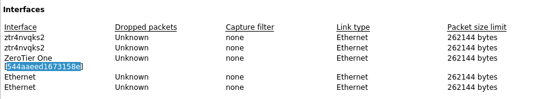
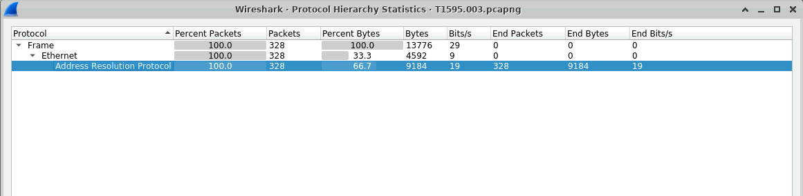
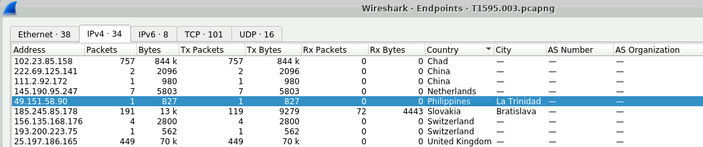
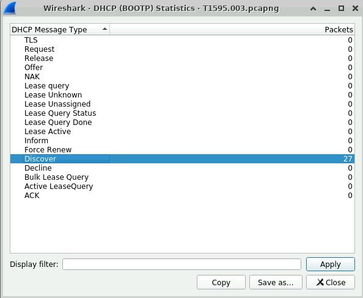
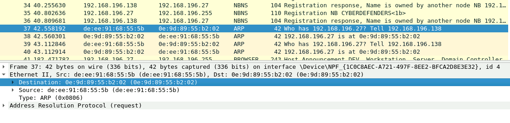
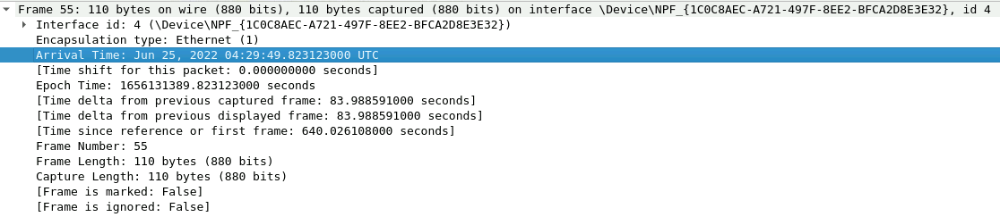
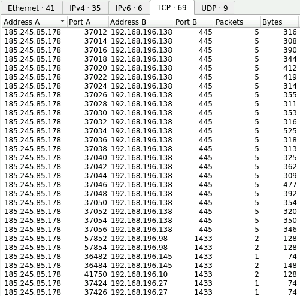
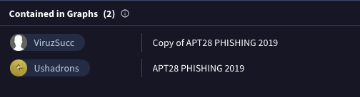

Análisis de laboratorio
T1595 Lab
23 Ago 2026
Escenario
Los adversarios pueden realizar diferentes formas de escaneo activo dependiendo de la información que buscan recopilar. Estos escaneos también se pueden realizar de varias maneras, incluyendo el uso de características nativas de protocolos de red tales como ICMP. La información de estos escaneos puede revelar oportunidades para otras formas de reconocimiento (por ejemplo: Buscar sitios web abiertos / dominios o buscar bases de datos técnicas abiertas), establecer recursos operativos (por ejemplo: Desarrollar capacidades o obtener capacidades) y/o acceso inicial (por ejemplo: Servicios remotos externos o aplicación de cara pública explotada).
Preguntas
¿Qué es el ID de red de nivel cero?
Para conocer el ID, accedemos a la parte de Estadísticas de Wireshark y seleccionamos las propiedades del archivo. Ahí podemos encontrar las interfaces de red y hallar el ID relacionado con la red ZeroTier.

¿Cuál es el tamaño de los paquetes ARP en bytes?
Para saber el tamaño de los paquetes ARP, primero aplicamos el filtro arp para seleccionar únicamente los paquetes de este protocolo. Después, entramos al apartado de Estadísticas y a Jerarquía de protocolos, donde podemos encontrar el total de bytes de los paquetes ARP.

¿Cuál es la dirección que más paquetes envió?
De igual manera, en la parte de Estadísticas y Conversaciones, podemos observar las direcciones IP y el número de paquetes enviados por cada una. De esta forma, podemos identificar cuál fue la dirección que más paquetes envió.
¿A qué está conectada la ciudad de la IP en Filipinas?
Al analizar el apartado de Estadísticas y Endpoints, podemos observar las direcciones IP junto con los países y ciudades relacionados. De esta manera, podemos identificar la ciudad asociada a la dirección IP ubicada en Filipinas.

¿Cuántos mensajes de DHCP Discover hay en el archivo PCAP?
En el apartado de Estadísticas hay una sección llamada DHCP (BOOTP). En esta sección podemos observar los diferentes tipos de mensajes DHCP y encontrar los mensajes relacionados con Discover.

¿Qué es la "dirección MAC objetivo" para el paquete 37?
En la parte izquierda tenemos numerados los paquetes, por lo que buscamos el paquete 37. Después, en el apartado Ethernet II, que corresponde a la capa 2 del modelo OSI, podemos encontrar la dirección MAC de destino.

¿Cuántos paquetes de respuesta ARP están presentes en el archivo PCAP?
Para este caso se utilizó el filtro arp.opcode == 2, que nos permite mostrar únicamente los paquetes que corresponden a respuestas ARP. Después, en la parte inferior de Wireshark podemos observar cuántos paquetes cumplen con este filtro.
¿Cuál es el paquete de tiempo 55 enviado?
Para este caso buscamos el paquete número 55 y, en el apartado Frame, podemos ubicar el campo Arrival Time, donde se muestra la fecha y hora en que fue capturado el paquete.

¿Cuál es el alcance de las direcciones IP de red específicas?
En el apartado de Estadísticas y Endpoints, podemos observar varias direcciones IP que pertenecen al mismo rango 192.168.196.x. Esto nos permite identificar que la red utiliza un rango /24, donde 192.168.196.0 corresponde a la dirección de red.
¿Cuáles son los números de puerto atacados por el atacante?
En el apartado de Estadísticas → Conversaciones, dentro de la sección TCP, podemos observar que la dirección IP 185.245.85.178 realiza múltiples conexiones hacia distintas direcciones IP internas. Al revisar los puertos de destino, podemos identificar que el atacante se está comunicando principalmente con dos puertos específicos.

¿Cuál es el país donde se encuentra el atacante?
Analizando la dirección IP 185.245.85.178 en VirusTotal, podemos observar que esta IP está relacionada con Eslovaquia.
¿Cómo se llama el actor de amenaza con el que se asocia esta técnica?
En la sección de VirusTotal, podemos observar que la IP aparece relacionada con un grupo conocido como APT28, el cual está asociado con actividades de ciberespionaje.

Conclusión
En este análisis se pude comprender mejor cómo utilizar Wireshark para investigar el tráfico de una red, identificando direcciones IP, puertos, protocolos y paquetes específicos. También fue posible detectar una IP con comportamiento sospechoso y utilizar VirusTotal para obtener más información sobre su origen y posibles relaciones. Considero que este tipo de análisis es importante para poder identificar actividades sospechosas y entender mejor lo que ocurre dentro de una red.